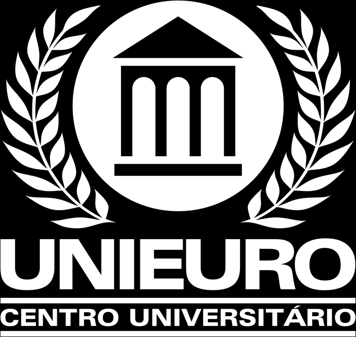
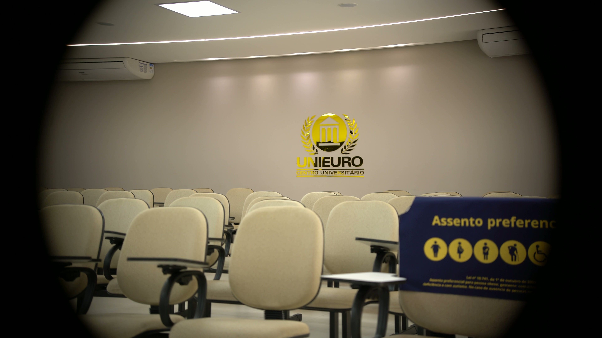
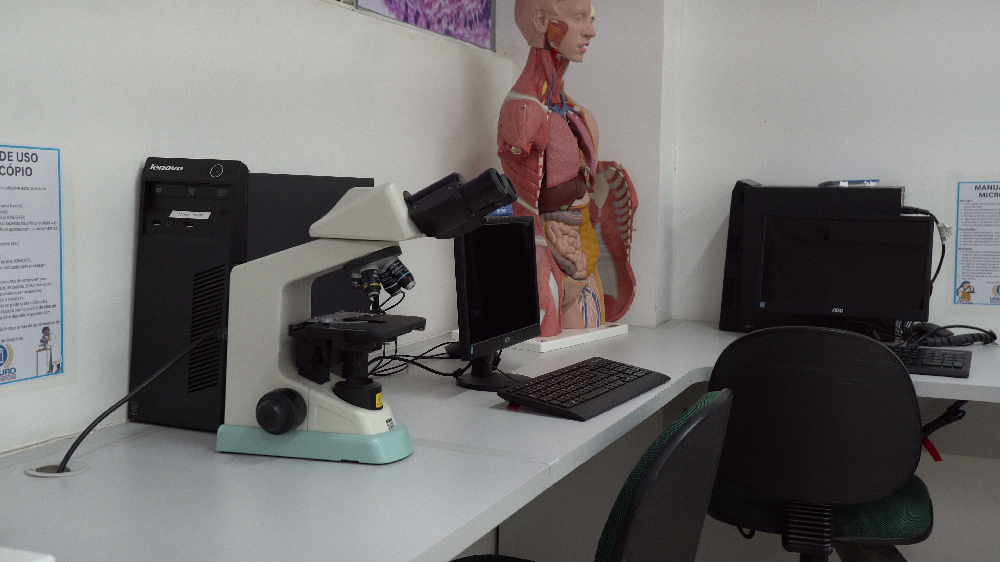
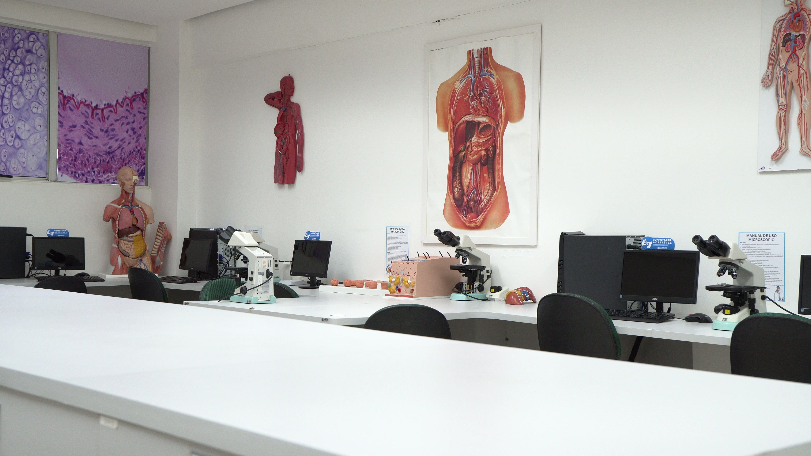
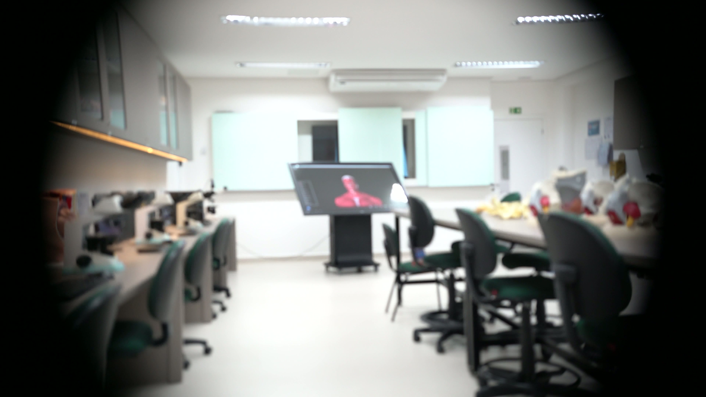
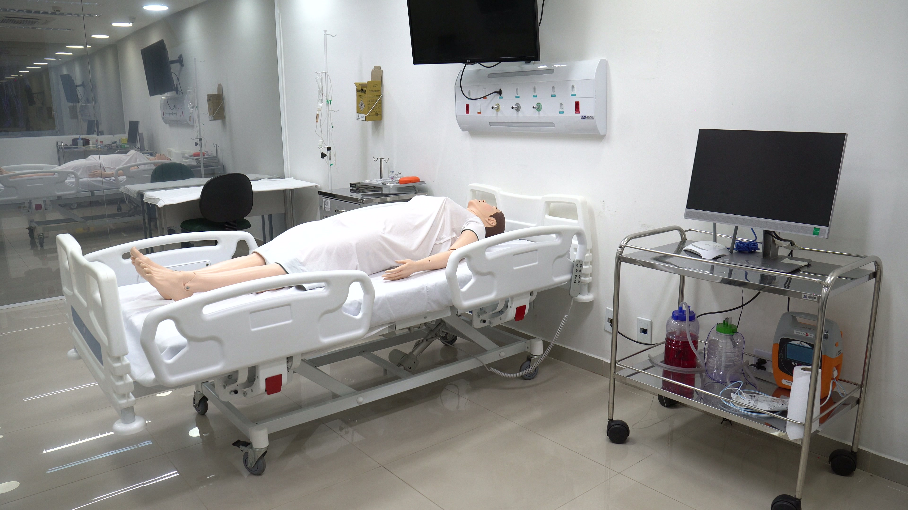

🎓
Estuda Medicina fora do DF
Quer voltar para Brasília sem reiniciar o curso ou perder o tempo já investido.

Transfira para o Unieuro e aproveite as disciplinas que você já cursou. Instituição de referência em Brasília, prédio dedicado na Asa Sul e clínica-escola própria.
Preencha seus dados para a coordenação entrar em contato.
Se você está cursando Medicina em outra instituição e sente que pode ter mais. Mais estrutura, mais qualidade, mais proximidade com Brasília, mais alinhamento com o futuro que você quer construir como médico. A transferência externa do Unieuro foi pensada exatamente para você.
Quer voltar para Brasília sem reiniciar o curso ou perder o tempo já investido.
Procura prédio próprio, clínica-escola e laboratórios à altura da formação que quer.
Está reavaliando a instituição atual e quer um ambiente que acompanhe o ritmo da sua formação.
Pode começar em 2026.2 sem prestar nova prova, com análise de equivalência curricular.
Instituição de referência em Brasília e oferecido em prédio dedicado no campus Asa Sul. Um projeto institucional construído com infraestrutura e ambiente clínico para formar médicos preparados para a prática profissional.
Análise individualizada de equivalência das disciplinas já cursadas na instituição de origem. Você não recomeça do zero, continua de onde parou.
Edifício no coração de Brasília projetado para o curso de Medicina, com laboratórios, salas de simulação e espaços de prática clínica integrados ao ambiente acadêmico.
Centro Universitário Unieuro consolidado no Distrito Federal desde 1998, integrante do Grupo Educacional Ceuma com mais de três décadas de tradição em ensino superior.
Espaço próprio com atendimento à comunidade e prática supervisionada dos alunos.
Anatomia, simulação e habilidades clínicas com equipamentos modernos.
Mestres e doutores com atuação em hospitais e instituições de saúde do DF.
Localização central de Brasília, com infraestrutura urbana completa e mobilidade.
Da solicitação inicial até a sua primeira aula no Unieuro. Tudo conduzido pela nossa coordenação, com clareza em cada etapa.
Preenche o formulário aqui na página com seus dados e a instituição de origem. Em até 48h úteis, a coordenação entra em contato pelo WhatsApp.
Você compartilha o histórico escolar e as ementas das disciplinas já cursadas. Nossa equipe conduz toda a análise de equivalência curricular.
Em poucos dias, você recebe o parecer detalhado: quais disciplinas serão aproveitadas e em qual semestre você ingressa no Unieuro.
Com a documentação aprovada, você efetiva a matrícula e começa as aulas no semestre 2026.2 no campus Asa Sul.
São aproximadamente 20 vagas de transferência externa para o semestre 2026.2. Quanto antes você solicita a análise, maior a chance de garantir sua vaga.
Estrutura pensada para garantir vivência clínica precoce, prática integrada e formação humanística sólida desde o primeiro semestre.





Imagens reais do campus Asa Sul
O Centro Universitário Unieuro é uma das instituições de referência do Distrito Federal, com tradição em ensino superior, infraestrutura ampla e excelência acadêmica.
Anos do Centro Universitário Unieuro em Brasília
Anos do Grupo Educacional Ceuma em ensino superior
Prédio dedicado ao curso de Medicina
Rede de hospitais e ambulatórios para prática clínica
São aproximadamente 20 vagas para transferência externa em 2026.2. As inscrições seguem por ordem de chegada até 30 de julho.
Uma das mais estruturadas e bem conceituadas universidades do País.
Laboratórios Didáticos com equipamentos de ponta e tecnologia educacional inovadora.
Clínicas-Escola próprias com especialidades a serviço da comunidade.
Mais de 30 cursos de excelência e tradição acadêmica em Brasília.
Acesso direto a bolsas de estudo e financiamentos.
Bibliotecas com acervo de mais de 1 milhão de títulos, nas versões física e digital.
Aval do mercado de trabalho e tradição de 30 anos.
Professores especialistas, mestres e doutores e capacitados a cada semestre em Metodologias Ativas e recursos didáticos de última geração.
Política pedagógica de inclusão e de responsabilidade social.
Estudantes que escolheram o Unieuro para iniciar ou continuar a graduação em Medicina.
A análise curricular foi rápida e justa. Consegui dar continuidade ao curso sem perder semestres e a recepção da coordenação fez toda a diferença.
A estrutura prática do Unieuro me surpreendeu. Os laboratórios de simulação e o internato em rede pública trazem uma vivência clínica muito sólida.
Encontrei um corpo docente próximo do aluno e um ambiente acadêmico sério. Recomendo para quem busca formação médica completa em Brasília.
Reunimos as principais dúvidas sobre transferência externa e ingresso no curso de Medicina do Unieuro.
Pronto para garantir sua vaga?
Última chamada — preencha e garanta sua análise.
Dúvidas sobre a matrícula?
Fale conosco.